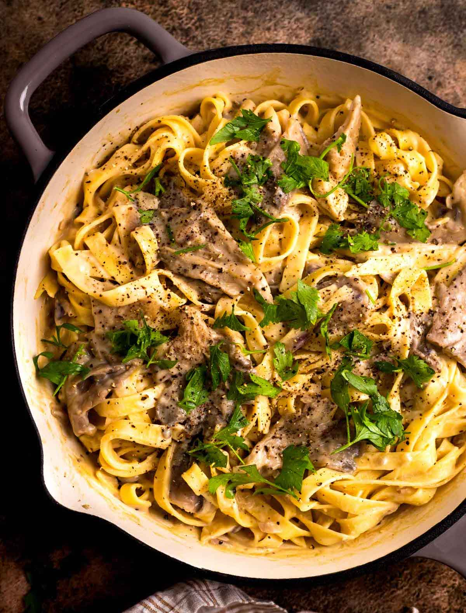

Mushroom Alfredo

Description
Sink your teeth into this dreamy, dairy-free Mushroom Alfredo Pasta—an irresistibly creamy and plant-based take on the Italian classic. With a luscious sauce built from wholesome ingredients like unsweetened soy milk, nutritional yeast, and arrowroot powder, this vegan (and nut-free!) version is rich in flavor yet gentle on dietary restrictions. Sautéed shallots and tender oyster mushrooms lend earthy depth and texture, which mingle beautifully with pasta cooked al dente. The result? A satisfying, indulgent dish that keeps all your cravings happy without ever sacrificing nutrition.
This recipe isn’t just delicious—it’s brilliantly accessible, with just five minutes of prep and fewer than thirty minutes of cooking time. Perfect as a quick weeknight fix or a show-stopping centerpiece at dinner gatherings, it delivers both convenience and gourmet flair. Adaptable and forgiving, it invites delightful variations—think a dash of red pepper flakes for heat, roasted veggies for color and crunch, or a drizzle of truffle oil for an upscale twist. When dinner’s done, store the leftovers in the fridge for up to four days or freeze them for up to three months—reheat with a splash of non-dairy milk for fresh, creamy goodness every time.
Ingredients
- Pasta: Choose your favorite white or whole-wheat pasta shape such as fettuccine, linguine, penne, or bow ties. Alternatively, you can use gluten-free pasta if you have dietary restrictions.
- Shallot: Provides a mild and sweet flavor to the vegan alfredo. Alternatively, you can use yellow or white onions for a stronger flavor or green onions for a milder savory flavor.
- Mushrooms: Choose your favorite mushrooms, such as oyster, maitake, shiitake, or baby bella. You can also mix and match for a diverse flavor and texture profile.
- Olive Oil: Use high-quality extra virgin olive oil for the richest plant-based flavor.
- Grapeseed Oil: Oil adds moisture and depth to the mushroom alfredo sauce. You can also swap it for more olive oil.
- Soy Milk: Opt for plain, unsweetened soy milk for a creamy base to the sauce. Alternatively, you can use another alternative milk like almond, cashew, oat, or your favorite variation.
- Arrowroot Powder: Thickens the sauce to give it a silky smooth texture. Alternatively, you can use cornstarch or tapioca starch.
- Nutritional Yeast: The key ingredient for adding a cheesy but dairy-free flavor to the alfredo sauce. If desired, you can substitute cashew cream, vegan mozzarella, or dairy-free parmesan cheese.
- Onion Powder & Garlic Powder: Add a savory depth of flavor to the pasta sauce. For the best flavors, always use spices with a good expiration date.
- Lemon Juice: Fresh lemon juice adds a bright acidity to the flavor of oyster mushroom alfredo sauce. Alternatively, you can substitute for white wine vinegar or balsamic vinegar.
- Sea Salt: Fine sea salt enhances the flavor of the sautéed veggies and the sauce.
- Black Pepper: Freshly ground black pepper in a pepper grinder gives the oyster mushroom pasta the best flavor, or you can use pre-ground black pepper.
- Parsley: Fresh parsley adds a tasty herbaceous garnish to the pasta and a pop of green color for a gourmet presentation. You can switch up your presentation by using other herbs like basil or thyme.
Steps
- Prepare Pasta. Cook the pasta according to the package directions in heavily salted water. Drain well, then toss immediately with a drizzle of extra virgin olive oil in the colander.
- Sauté Shallots. Warm the grapeseed oil in a skillet over medium heat. Add the shallots and sauté until they turn translucent, for about 2 minutes.
- Add Mushrooms. Add the mushrooms to the skillet with the shallots and add a pinch of salt. Cook until the mushrooms are tender, stirring periodically, for about 8 minutes.
- Prepare Sauce. In a small bowl, combine the soy milk and arrowroot powder (or cornstarch). Whisk well, breaking up any clumps of arrowroot powder, until smooth.
- Add Sauce. Pour the soy milk mixture over the mushrooms in the skillet. Immediately stir in the nutritional yeast, onion powder, garlic powder, lemon juice, and salt. Reduce the heat to medium-low. Stir the sauce and mushroom mixture and cook until the sauce has thickened. Season to taste with more lemon or salt as needed.
- Add Pasta. Pour the cooked pasta into the skillet and gently toss together to combine. Serve hot, garnished with freshly ground black pepper and parsley.
Home